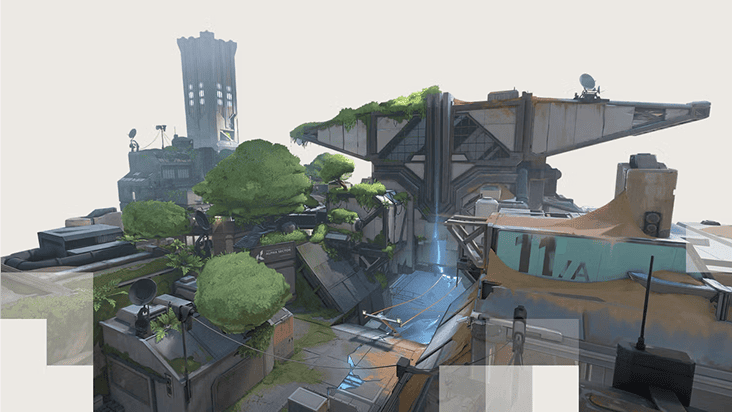
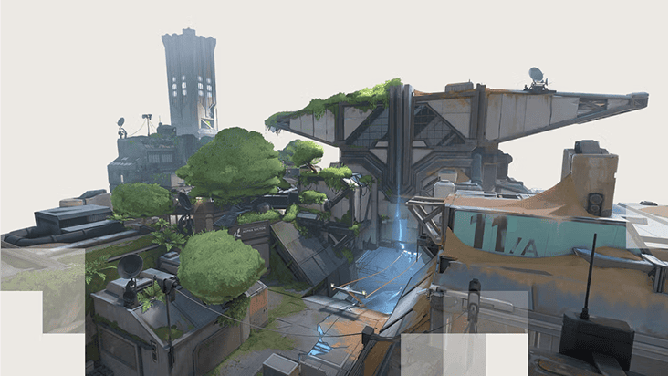

Fracture
 

Fracture is set in a secret research facility that suffered a catastrophic dimensional rift, blending high-tech labs with unstable void energy. The map's H-shape forces defenders to split resources while attackers can exploit the central zipline.
Unique Environmental Aspects:
Strategic Points:
- Dish: High ground with sightlines to both sites
- Tower: Strong defensive position with cover
- Arcade: Close-quarters combat area with multiple angles
- Generator: Central control point with zipline access
Ascent


Set in a floating Venetian neighborhood, Ascent features destructible walls and beautiful but deadly open spaces. The map's mid-courtyard offers sniper sightlines while the side alleys provide close-quarters combat opportunities.
Unique Environmental Aspects:
Strategic Points:
- Mid Courtyard: Central area with multiple angles
- Catwalk: High ground overlooking Site A
- B Main: Main choke point for Site B
- Tree: Cover-rich area with rotation options
Bind

Located in a Moroccan coastal town, Bind's teleporters create instant rotation opportunities. The map's tight corridors and sandy terrain affect footstep sounds, while the ocean backdrop provides stunning but distracting views.
Unique Environmental Aspects:
Strategic Points:
- Hookah: Close-quarters area leading to Site B
- Bath: Open area with teleporter access
- U-Hall: Long sightline to Site A
- Short A: Quick access to Site A
Icebox


This abandoned Arctic research station features extreme verticality with cargo containers and metal walkways. The freezing environment affects visibility with breath vapor, while the unstable ice creates dangerous sightlines.
Unique Environmental Aspects:
Strategic Points:
- Tube: Central area with zipline access
- Belt: High ground overlooking Site B
- Nest: Sniper perch with wide view
- Kitchen: Close-quarters area near Site A
Breeze
This tropical island paradise hides dangerous sightlines among its ruins and caves. The constant ocean breeze affects projectile trajectories slightly, while the ancient stone structures provide unique angles.
Unique Environmental Aspects:
Strategic Points:
- Pyramid: Central high ground with rotation options
- Cave: Protected route to Site B
- Arches: Long sightline to Site A
- Mid Wood Doors: Choke point between sites